Project 1: Colorizing Images
Image pre-processing
Before doing the single-scale or multi-scale pyramid alignment, my program has to process the images to prepare them for the alignment. The images are in a photostrip-like format, so the program will split the single photo into 3 separate images that each represent one of the RGB color channels. I also converted them into numpy float arrays.
Metric
The metric I used to identify the best alignment was the L2 norm. I chose to use the L2 norm instead of the NCC because numpy already has a built-in function to calculate the L2 norm of an array. Therefore, I think that this would improve my efficiency. I used numpy’s built-in function np.linalg.norm() to calculate the L2 norm of the difference between the two images.
The offset with the best alignment will have the smallest L2 norm, since the L2 norm of the difference between two image vectors is a measure of the distance between them. A larger distance means that the images are less similar.
Single-Scale Alignment
For the smaller images that were provided in the dataset, such as ‘cathedral.jpg’, ‘tobolsk.jpg’ and ‘monastery.jpg’, I could use single-scale alignment. This is because the images are small enough that the program can efficiently search an offset range that is large enough to find the correct alignment.
Additional Cropping
All the images are surrounded by black borders which weren’t important to image alignment as they weren’t part of the actual picture. However, these borders were sometimes uneven between the 3 color channel images and would likely cause distortion in my algorithm’s alignment metric calculations. Therefore, I set a parameter, which I called “offset”, to 30 pixels. This offset would be the amount the image would be cropped on both sides of the height and width. I decided to use 30 pixels because the widest border of the 3 smaller images was around 20 pixels, and I thought it would be good to add a 10 pixel buffer to account for additional noise near the sides of the image. The offset can be wider than the border because based on the glass plate images provided, the most important pixels for the alignment are in the more central parts of the image.
Below is an example of the noise near the border I’m referring to (in cathedral.jpg):
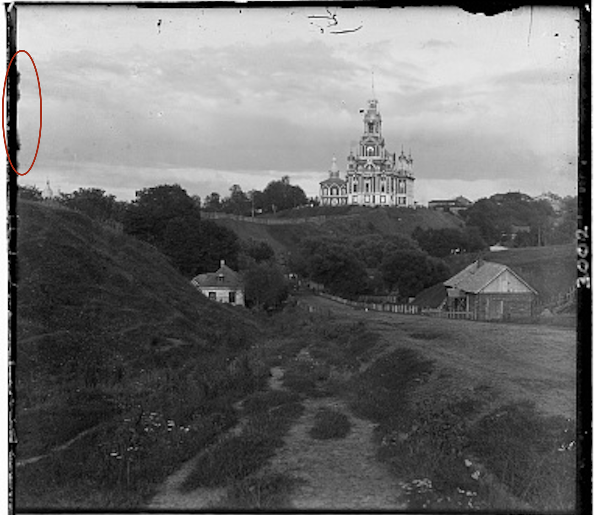
Best alignment
I found the best alignment offset by looping through different combinations of pixel offsets in the height and width of the image. The combinations of offsets were within the range (-30, 30) for both the height and width. For each offset, the algorithm will:
- Use np.roll() to shift the red or green image in both the i and j directions
- Find the L2 norm of the difference between the blue and the shifted red or green image
- Check if the new L2 norm is lower than the “current” lowest L2 norm.
- If it is, then it will update the “current” lowest L2 norm and alignment offset to the newly identified one.
Results!
Here is a gallery showing the results of my single-scale alignment function!
Cathedral

Original Image: cathedral.jpg
Red Channel Displacement Vector: (12, 3)
Green Channel Displacement Vector: (5, 2)
Monastery

Original Image: monastery.jpg
Red Channel Displacement Vector: (3, 2)
Green Channel Displacement Vector: (-3, 2)
Tobolsk

Original Image: tobolsk.jpg
Red Channel Displacement Vector: (6, 3)
Green Channel Displacement Vector: (3, 3)
Multi-Scale Pyramid Alignment
For the larger images with the file type ‘tif’, I could not use my single-scale alignment algorithm. The images had too many pixels that searching through a range of (-30, 30) pixels would be too inefficient. Therefore, I needed to use image pyramids to align the images.
Additional Cropping
The cropping will need to be done in all the recursive calls, as even the downsized images will have the black border. However, since the image sizes are decreasing due to the image pyramid, I needed to make the cropping dynamic. A smaller image will need a smaller pixel cropping offset than a larger image with more pixels. I decided on this cropping offset to be 10% of the image’s height and width by finding the percentage of the single-scale alignment cropping offset = 30/390 * 100% = ~7% and rounding up to the nearest 10% to add an additional pixel buffer for noise near the border. Cropping an additional 3% would also improve efficiency without affecting alignment, as there are less pixels and therefore less values when calculating the L2 norm.
Image Pyramids for Best Alignment
The best alignment offset was determined using image pyramids. I used recursion to make recursive calls that will downsample the image until it was to a size that in which a (-17, 17) range search would be effective to find an approximate alignment offset.
Base Case
If the image height is <= 300 pixels, the function will crop the image using the cropping offset and find the alignment offset that will create the best alignment (lowest L2 norm) within a (-17, 17) search range. The base case uses the same concept as my single-scale alignment algorithm, but with a smaller range. The single-scale alignment offsets ranged from -3 to 12, so a (-17, 17) range is likely large enough to capture the alignment offsets for images <= 300 pixels.
Recursive call
If the image height is >300 pixels, the function will downsample the images by a factor of 0.5 then make a recursive call using the new downsampled images which will return the offset that will create the best alignment. Afterwards, it will use this alignment offset (multiplied by 2 to scale the pixels to the original image) as a base offset to refine the alignment on the non-downsampled image using the same method as in the base case.
Rationale behind the values
Initially, I thought I should make the base case <= 400 pixels and the search range (-20, 20) because the smaller images were around 390 pixels tall and my single-scale alignment algorithm was able to efficiently process them in a short amount of time. I decreased the search range to (-20, 20) because the alignment offset range for the single-align images of around 400 pixels tall was around -3 to 12. However, it ended up taking around 1 minute and 20 seconds per image. Therefore, to improve efficiency, I decided I would need to further decrease the range so I tried (-17, 17). To account for the smaller search range, I also decreased the base case parameter from 400 to 300 pixels.
Results!
Using my algorithm, 13/14 of the provided images were properly aligned. Some photos have what appears to be misalignment in only certain areas, but I believe that it is likely due to slight motion that occurred in between
Below is a gallery of the successful results of the multi-scale pyramid alignment function I created.
Church
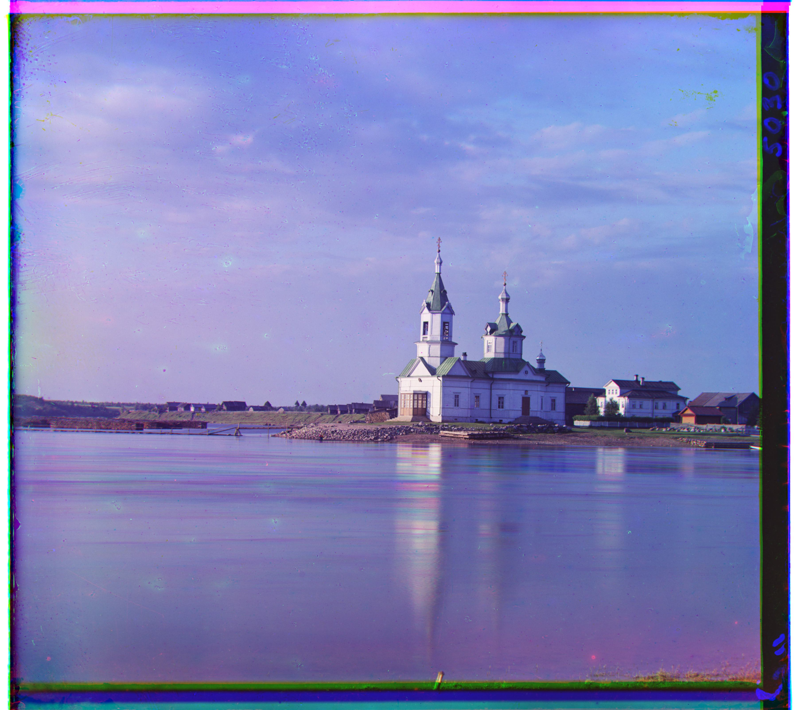
Original Image: church.tif
Red Channel Displacement Vector: (58, -4)
Green Channel Displacement Vector: (25, 4)
Harvesters

Original Image: harvesters.tif
Red Channel Displacement Vector: (124, 13)
Green Channel Displacement Vector: (59, 16)
Icon
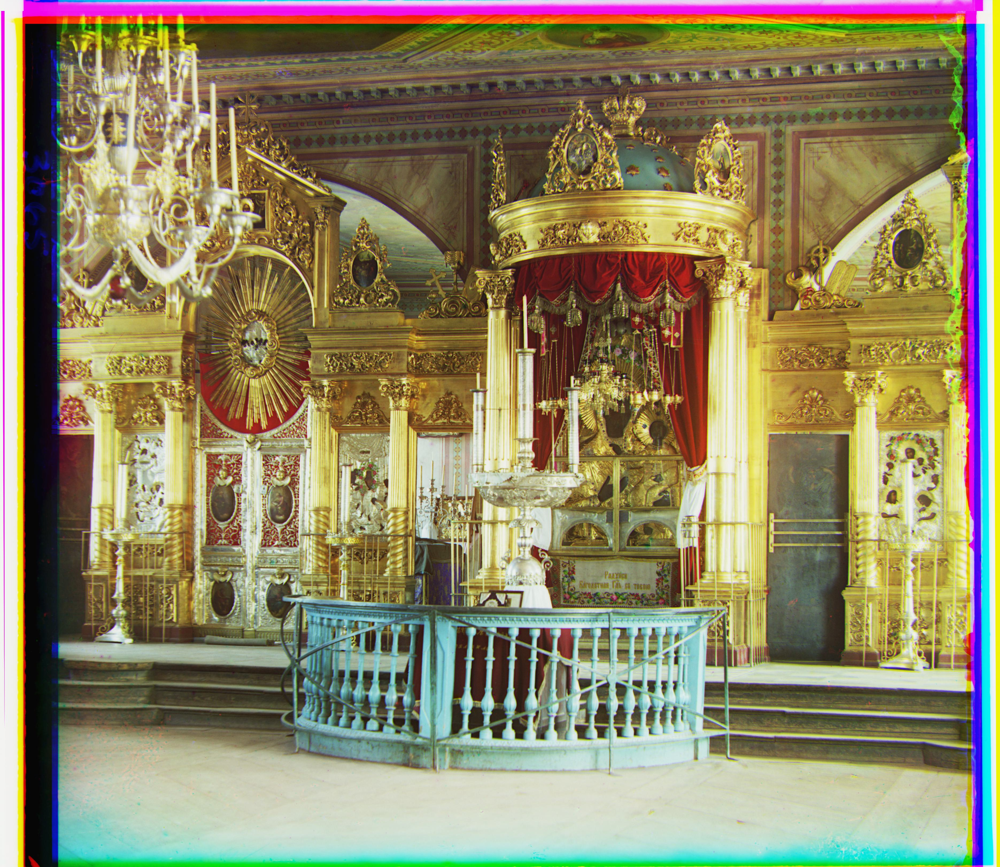
Original Image: icon.tif
Red Channel Displacement Vector: (89, 23)
Green Channel Displacement Vector: (41, 17)
Ilemselga
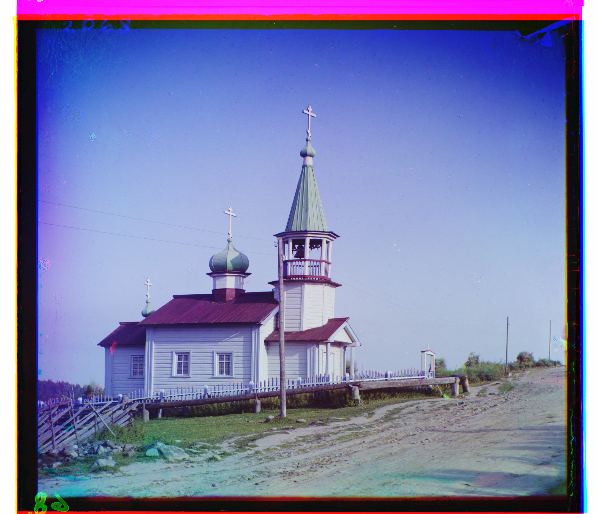
Original Image: ilemselga.tif
Red Channel Displacement Vector: (130, 11)
Green Channel Displacement Vector: (40, 7)
Melons
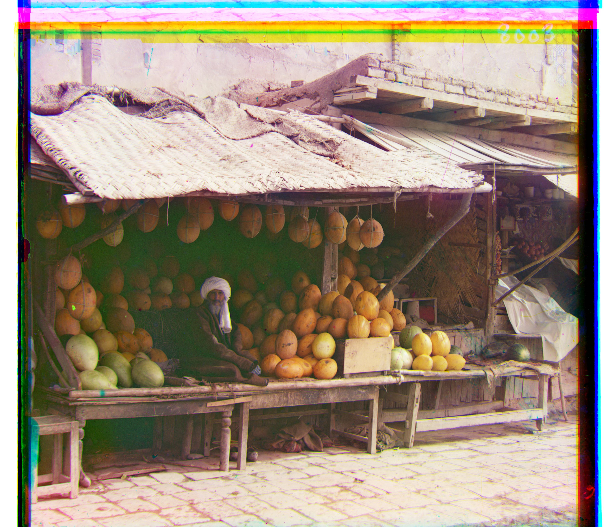
Original Image: melons.tif
Red Channel Displacement Vector: (178, 13)
Green Channel Displacement Vector: (81, 10)
Religous Painting
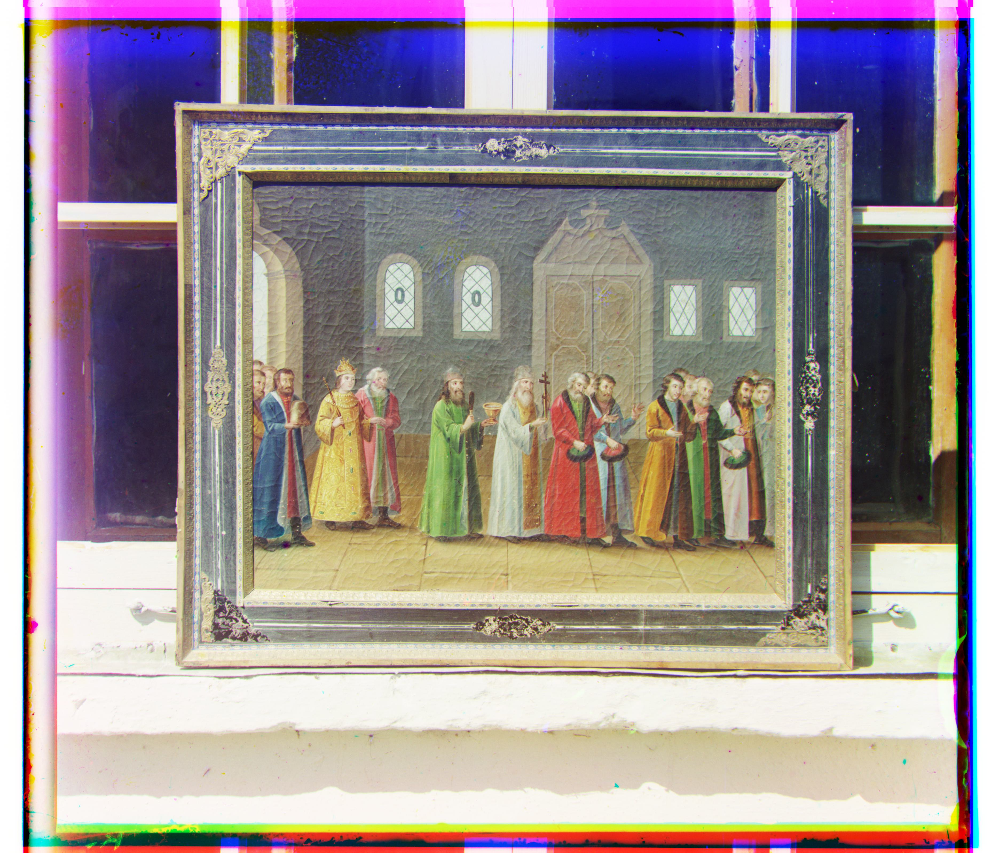
Original Image: religous_painting.tif
Red Channel Displacement Vector: (68, 7)
Green Channel Displacement Vector: (27, 3)
Self-Portrait
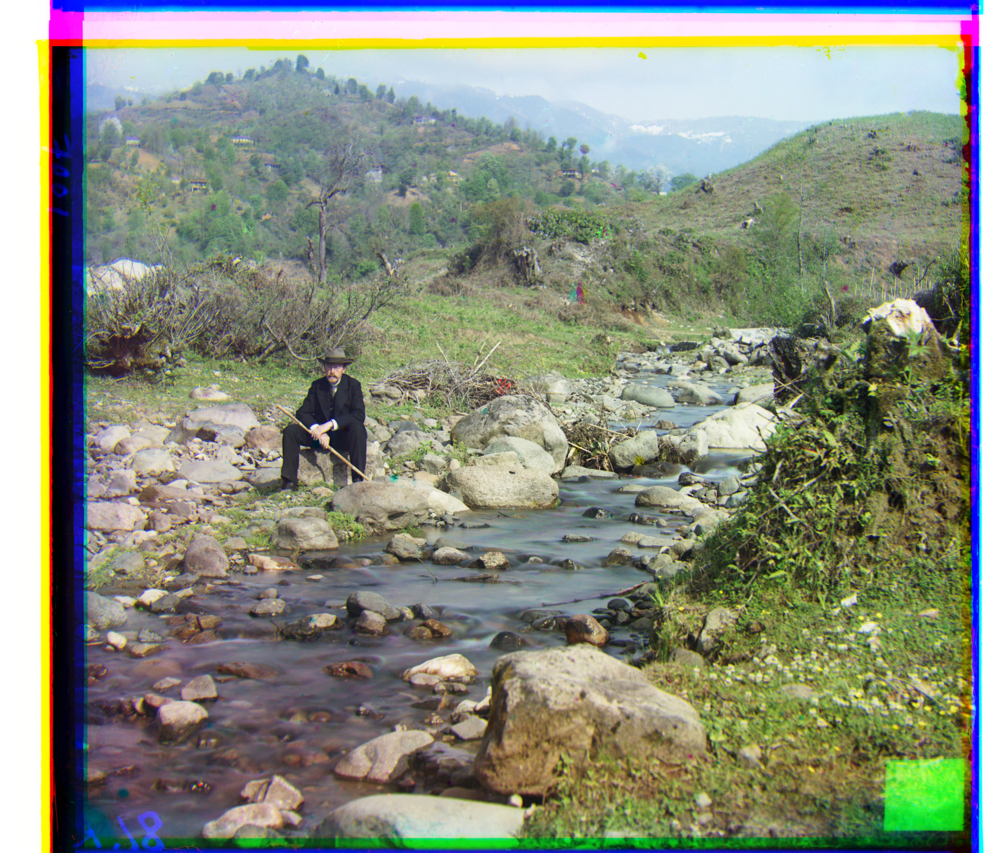
Original Image: self_portrait.tif
Red Channel Displacement Vector: (176, 37)
Green Channel Displacement Vector: (78, 29)
Siren
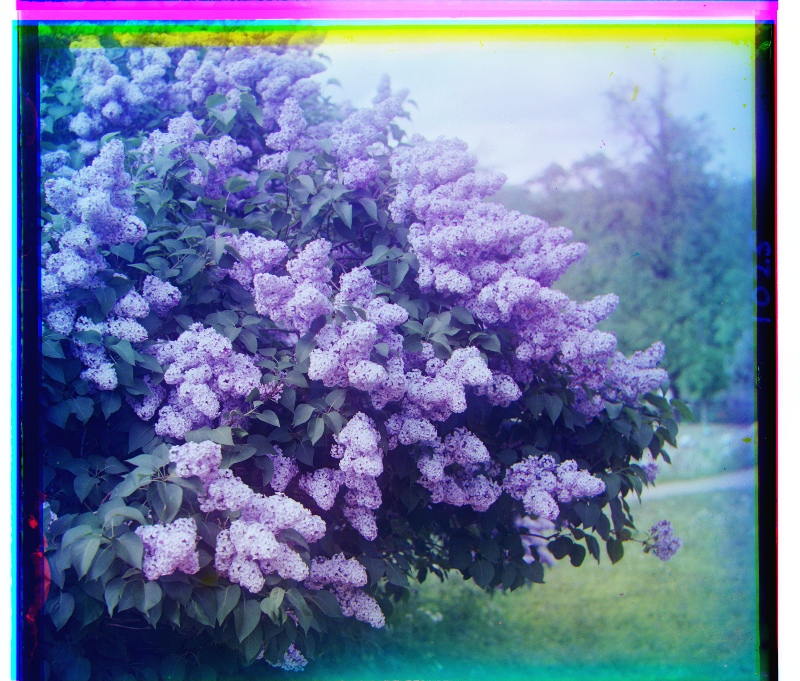
Original Image: siren.tif
Red Channel Displacement Vector: (95, -25)
Green Channel Displacement Vector: (49, -6)
Three Generations

Original Image: three_generations.tif
Red Channel Displacement Vector: (112, 11)
Green Channel Displacement Vector: (53, 14)
Wharf
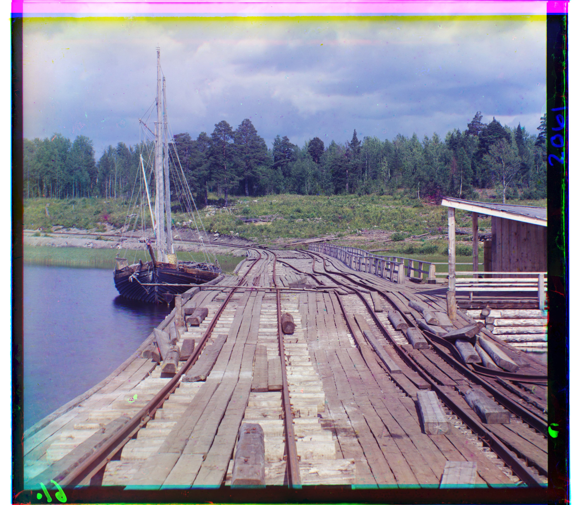
Original Image: wharf.tif
Red Channel Displacement Vector: (82, -16)
Green Channel Displacement Vector: (15, -7)
Cathedral

Original Image: cathedral.jpg
Red Channel Displacement Vector: (12, 3)
Green Channel Displacement Vector: (5, 2)
Monastery
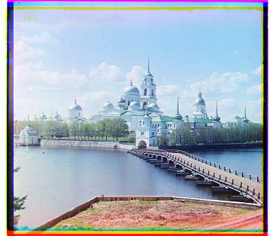
Original Image: monastery.jpg
Red Channel Displacement Vector: (3, 2)
Green Channel Displacement Vector: (-3, 2)
Tobolsk
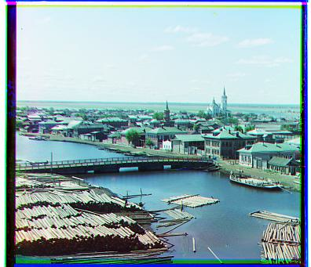
Original Image: tobolsk.jpg
Red Channel Displacement Vector: (6, 3)
Green Channel Displacement Vector: (3, 3)
The image that failed to align properly was ‘emir.tif’. This is what my algorithm’s colorization attempt created:
Emir
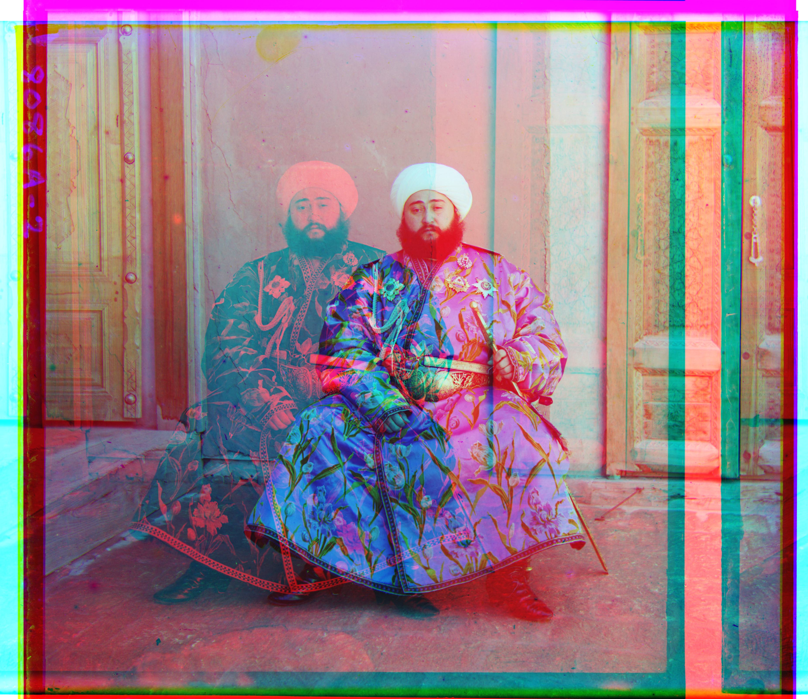
Original Image: emir.tif
Red Channel Displacement Vector: (96, -482)
Green Channel Displacement Vector: (49, 24)
According to the project 1 page, the color channel images of “Emir of Bukhara” (emir.tif) don’t “have the same brightness values”. This difference in brightness values caused the algorithm to identify an incorrect alignment. This is because the L2 norm metric I used measures the difference between the values of the two vectors. Therefore, if the level of brightness is different between the two images, the L2 norm metric is insufficient to accurately identify the similarity between the images. Therefore my offsets are incorrect. The Red channel displacement vector was (96, -482), which has a very large offset y-axis offset. I think that the Red image has a lower brightness to the other images, and to fix this I would need to find a way to adjust the brightness of the red channel for this image.
Additional Images...
I selected the following additional images from the Prokudin-Gorskii collection to test my multi-scale pyramid alignment algorithm:
Below is the gallery of the before and after results on the additional images. All images were properly aligned by my algorithm. [note: I uploaded the .jpg version of the originals to save memory space]
Lugano
Red Channel Displacement Vector: (120, 32)
Green Channel Displacement Vector: (55, 8)
V Italīi
Red Channel Displacement Vector: (76, 35)
Green Channel Displacement Vector: (38, 21)
Na Ostrovie Kapri
Original

Red Channel Displacement Vector: (78, -25)
Green Channel Displacement Vector: (32, -16)
Camel, loaded with sacks, lying in field of sacks
Red Channel Displacement Vector: (98, -19)
Green Channel Displacement Vector: (46, -3)
Additional Information
Overview & Comparison
| Algorithm |
Metric |
Border Cropping Offset (height, width) |
Alignment Offset Range for height and width |
Downsampling |
| Single-Scale Alignment |
L2 norm |
(30 pixels, 30 pixels) |
(-30, 30) |
None |
| Multi-Scale Pyramid Alignment |
L2 norm |
(height * 0.1 pixels, width * 0.1 pixels) |
(-17, 17) |
If image height > 300, downsample image by factor of 0.5 |
Saving Images
As suggested, I saved the images as a 'jpg' in order to reduce the file size. To do this, I had to convert the image to uint8 (ubyte in skimage) before saving the image. Saving as ‘jpg’ instead of ‘tif’ will help save memory
Speed & Efficiency
For the multi-scale pyramid alignment, the overall speed of my algorithm was around 52 seconds for the images in the ‘tif’ format. I measured the time using a stopwatch.
User Inputs
To make it easier to run the program, I added user inputs to prompt the user to enter the following information:
- Alignment style: whether the user wants to use single-scale or multi-scale pyramid alignment
- Folder path: the path of the folder that is holding all the images to colorize. This folder will also be used to store the colorized images.
- List of image file names: a list of the image file names separated by commas.